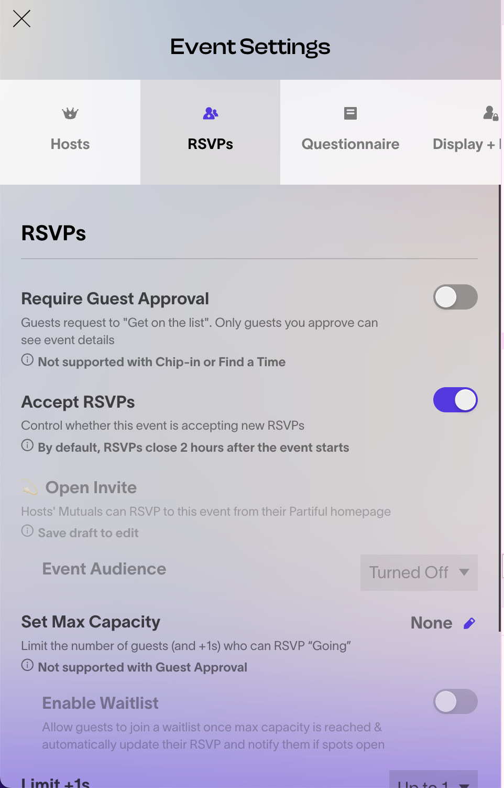
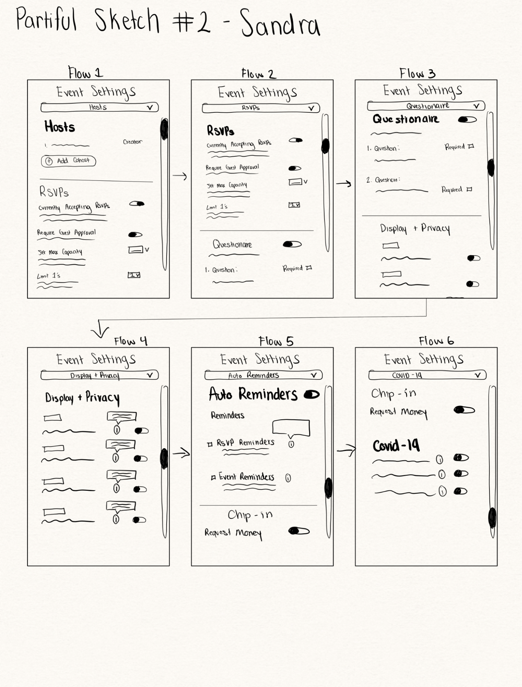
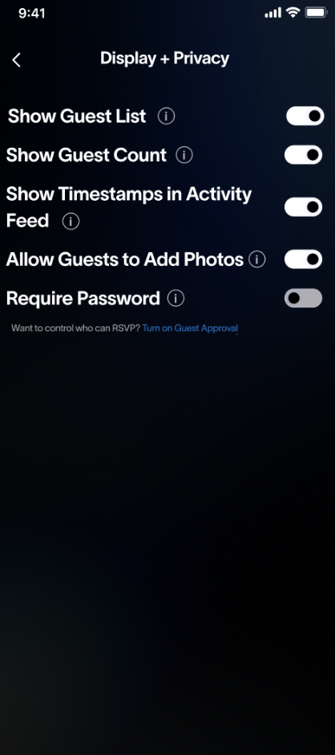
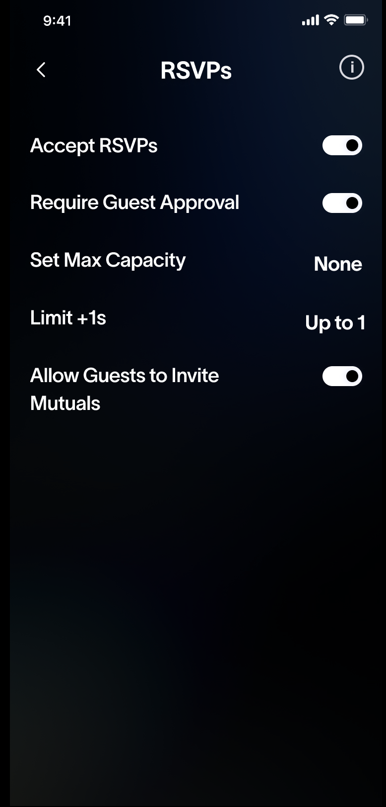
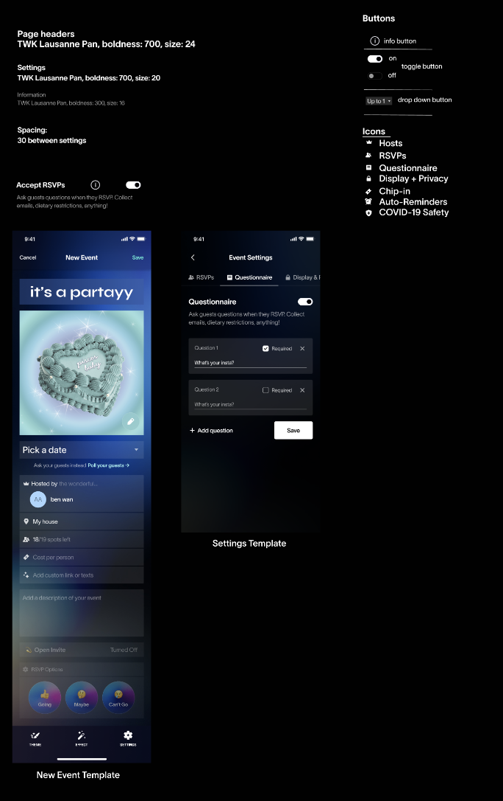
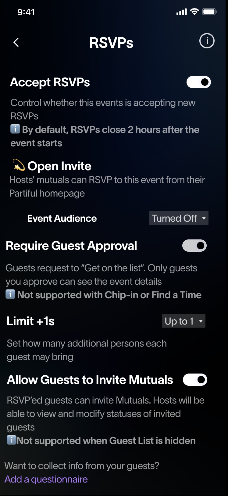
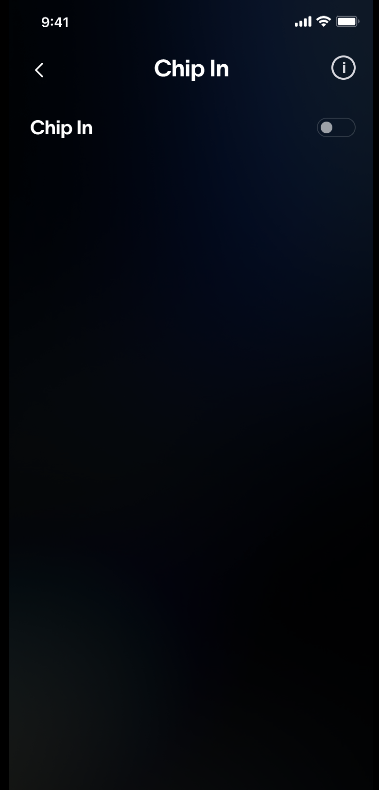

<!DOCTYPE html>
<html lang="en"></html>
<html>
  <head>
    <title>Sandra Sandoval Portfolio</title>
    <link rel="stylesheet" href="styles.css" />
    <link rel="stylesheet" href="redesign.css" />
    <link rel="stylesheet" href="iterative.css" />
  </head>
  <header>
    <div id="Title">
      <h1>Sandra Sandoval</h1>
    </div>
    <div id="header-container">
      <a href="index.html"><h2>Home</h2></a>
      <!-- <h2 class="current">Home</h2> -->
      <a href="projects.html"><h2>Projects</h2></a>
      <!-- <h2>Projects</h2> -->
      <a href="assets/Sandra_s_Resume (1) (1).pdf"><h2>Resume</h2></a>
      <!-- <h2>Resume</h2> -->
    </div>
  </header>

  <body>
    <div class="main-body">
      <div class="menu">
        <ul>
          <li><a href="#Overview" , id="menu-item">Overview</a></li>
          <li><a href="#Problem" , id="menu-item">Problem</a></li>
          <li><a href="#Sketches" , id="menu-item">Sketches</a></li>
          <li><a href="#Mockups" , id="menu-item">Mockups</a></li>
        </ul>
      </div>
      <div class="body-content">
        <h1 , id="Project-title">Iterative Design <i>Partiful Settings</i></h1>

        <div class="section" , id="Overview">
          <div class="subsection" , id="overview-subsection">
            <p>
              <b>Overview</b>
              <br />
              Partiful, an event-planning app targeted towards young adults,
              expressed concern about its setting's usability and accessibility.
              As a group of four, my group and I aimed to design a
              high-fidenlity prototype that addressed this concern in such a way
              that made Partiful's settings more intuitive and prominent.
              Through several sketches , lo-fi wireframes, and feedback from the
              founders, we designed a prototpe that best addresses the issue.
            </p>
            
          </div>
        </div>
        <div class="section">
          <div class="subsection" , id="team-subsection">
            <p>
              <b>Meet The Team</b>
            </p>
            <div id="card-container">
              <div class="photo-card">
                
                <p>Sandra Sandoval</p>
                <i>Product Designer</i>
              </div>
              <div class="photo-card">
                
                <p>Sarah Onderdonk</p>
                <i>Product Manager</i>
              </div>
              <div class="photo-card">
                
                <p>Anastasio Ortiz</p>
                <i>UX Researcher</i>
              </div>
              <div class="photo-card">
                
                <p>Caroline Hwang</p>
                <i>Product Designer</i>
              </div>
            </div>
          </div>
          <!-- <div class="section">
            <div class="subsection" , id="iterative-subsection">
              <p>
                <b></b>
              </p>
            </div>
          </div> -->
        </div>
        <div class="section" , id="Current">
          <!-- <h2>Current Design</h2> -->
          <div class="subsection" , id="iterative-subsection">
            <p>
              <b>Current Design</b>
              <br />
              The Current Events Settings Page on mobile devices display the
              different setting options through a horizontal bar. However, as
              can be seen by the image, some settings are not visible. Thus, an
              issue that needs to be addressed is the issue that users, with the
              current design, may not be aware of some of these settings.
            </p>
            
          </div>
        </div>
        <div class="section" , id="Sketches">
          <div class="subsection" , id="redesign-subsection">
            <p>
              <b>Initial Sketches</b>
              <br />
              <br />
              With Partiful's concerns and our own experiences interacting with
              Partiful's settings page, we each sketched out several possible
              ways to solve this issue.
              <br />
              <br />
              Specifically, when sketching out my initial ideas on how to
              resolve this issue, I aimed at making all setting options easily
              visible to allow navigation to be more intuitive. Thus, one idea I
              sketched out was incorporating a drop-down menu at the top of the
              page to allow the user to navigate throuh each settings page.
              <br />
              <br />
              Further, when interacting with the settings page, I noticed a lot
              of redundancy and large amounts of information being displayed on
              every page. Therefore, one of my other initial ideas was to
              include information bubbles that would display information about a
              particular setting if the user did not fully understand its
              function.
              <br />
              <br />
              An idea that was shared by all of us was the implementation of an
              interface modeled by Apple's settings. Our reasoning behind this
              idea was the idea of learnability in which users will feel the
              settings are more intuitive if it reminds them of something that
              they already have experience with.
              <br />
              <br />
              The idea of an infinite scolling settings page was another idea
              shared by many of us. This would allow for easier navigation from
              one event setting to another.
            </p>
          </div>
          <div class="sketch-container">
            
            
            
          </div>
          <!-- <div id="box-container">
            <div class="box">
              <h2>Learnability</h2>
              <li>
                Poor structure: The order of the images (with the special
                signature image directly above the menu image) may cause
                confusion for the user in which image they should be looking at
                to get information about the drinks, toppings, and prices
                offered by Vivi Bubble Tea.
              </li>
              <li>
                Layout: Navigation may not be very intuitive as the menu image
                is not the main or the largest image on the page.
              </li>
            </div>
            <div class="box">
              <h2>Memorability</h2>
              <li>
                Clutter: While the menu displayed on the web page serves as a
                good example of effective memorability due to its resemblance to
                real menus, the web page in its entirety does not as it contains
                several other redundant images that are displayed in a vertical
                manner, causing confusion.
              </li>
            </div>
            <div class="box">
              <h2>Effeciency</h2>
              <li>
                Clutter : The order of the images reduces the page’s efficiency
                as users must seek the menu image that contains information
                about drinks, prices, and toppings from the others displayed on
                the screen.
              </li>
              <li>
                Ordering: There is no way to select an item from the page to
                place an order. Instead, the customer must type their wanted
                order onto a different page. This reduces efficiency as a
                customer will have to find their desired drink from another menu
                on a different page.
              </li>
            </div>
          </div> -->
        </div>
        <div class="section" , id="Lo-FI">
          <!-- <h2>Sketches</h2> -->
          <div class="subsection" , id="skecthes-subsection">
            <p>
              <b id="">Lo-Fi Mockup</b>
              <br />
              <br />
              From our combined sketches, we reviewed some similarities between
              each one and created a Lo-FI Mockup for our redesign of the
              settings page.
              <br />
              <br />
              In particular, we all agreed that redundancy in the settings page
              may make users feel overwhelmed and affect usability. Thus, since
              "Chip In" and "Add Cohosts" were settings found on the main Create
              Event page, we believed we could remove these settings from the
              settings page to decrease redundancy.

              <br />
              <br />
              Further, we agreed modeling our design by Apple's settings may
              make the most sense as this is an interface that Partiful users
              will be familiar with.

              <br />
              <br />
              Further, we wanted to include my idea of information bubbles at
              the top of each setting page so that the interface did not look as
              cluttered.
              <br />
              <br />
              From these ideas, we came up with this lo-fi wireframe.
            </p>
            <!--  -->
          </div>
          <div class="sketch-container" , id="partiful-loFi">
            
            
            
          </div>
        </div>
        <div class="section" , id="loom">
          <div class="subsection" , id="redesign-subsection">
            <p>
              <b>Loom Walkthrough</b>
              <br />
              <br />
              To provide Partiful with a deeper understanding of our mockup and
              its flow, Anastasio, our User Researcher, recorded a loom
              detailing the flow and our design choices.
              <br />
              <br />
              The loom can be accessed
              <a
                href="https://www.loom.com/share/9efcfc5fd84d41ce8f9686c106405339?sid=6ec047be-2eb2-440c-b82a-bb308f72c0e3"
                >Here</a
              >
            </p>
          </div>
        </div>
        <div class="section" , id="Feedback">
          <div class="subsection" , id="redesign-subsection">
            <p>
              <b> User and Founder Feedback </b>
              <br />
              <br />

              When our lo-fi mockup was presented to users to gauge a better
              idea of how their interactions with the settings page changed with
              our design, one critique we receieved was the lack of clarity in
              regards to how our info bubble would be displayed on the page.
              However, users agreed that the implementation of info bubbles
              would allow for a cleaner look in the settings interface by
              decluttering it. Still, many users were concerned about the event
              that a user is confused about all settings and therefore, will
              need to click each info bubble to view the information. This was a
              very valid concern as this would devalue our attempts at making
              this intuitive.

              <br />
              <br />
              Similarly, Our client had similar critiques. They worried that
              clicking into more icons may get annoying if users had to keep
              doing it for each setting. They also suggested that we add spacing
              and reduce the boldness here to make sure things are legible and
              easy to follow. In addition, they pointed out that settings also
              works for hosts without having to click into "edit event" - so by
              removing “Chip In” and adding “Co host,” hosts will be forced to
              "edit event" in order to change these settings. Finally, they also
              felt the design of the info buttons was unclear but they thought
              that either a pop up or adding text that would move the page
              elements down were both unideal.
            </p>
          </div>
          <!-- <div class="img-container">
            
            
            
          </div> -->
        </div>

        <div class="section">
          <div class="subsection" , id="redesign-subsection">
            <p>
              <b> Updated Wireframe </b>
              <br />
              With both perspectives in mind, we decided to address common
              critiques such as the ambiguity of our information bubbles and
              usability when users want to access information for all settings.
              <br />
              <br />
              In particular, we chose to address this issue by altering the way
              in which we display information after an info bubble has been
              clicked. We decided that instead of info bubbles appearing for
              each setting, the information bubble would only be displayed at
              the top of each settings page. We believed that this would greatly
              reduce redundancy as users would only need to click the
              information bubble once to view information for all settings on
              that page. Further, this would reduce the reduncnacy of the info
              bubble element on each page and therefore, allow for a cleaner
              look.
              <br />
              <br />
              Further, we agreed to factor in 'Chip in' and 'Add Cohosts' into
              the settings page to allow for easier navigation and less steps
              for the user.
            </p>
          </div>
          <div class="sketch-container" , id="revised-container">
            
            
          </div>
        </div>
        <div class="section" , id="styleGuide">
          <div class="subsection" , id="iterative-subsection">
            <p>
              <b>Style Guide</b>
              <br />

              For the style guide, we tried to keep things as uniform with the
              rest of the application as possible. Given that we were working
              with the settings page, we needed users to relate the same
              icons/typography to their corresponding fields when they were
              outside of the settings page creating an event.
              <br />
              <br />
              Most of the colors that we used were neutral colors like black and
              white that went with the style of having all the functionality
              look a certain way and then have the background/images be funky
              and colorful. We decided that it was important to keep using the
              icons that were already in place, to maintain a level of
              understanding of which settings tab pertains to each setting.
              <br />
              It was important for us to keep track of the buttons and icons we
              were using as we all worked in different tabs and needed them to
              be in the same style. Our style guide also includes frames that
              are already in use from the New Event page and the Settings page
              that we used as a skeleton for the redesign.
            </p>
            
          </div>
        </div>
        <div class="section" , id="Sketches">
          <!-- <h2>Development</h2> -->
          <div class="subsection" , id="redesign-subsection">
            <p>
              <b> Hi-Fi Prototype</b>
              <br />
              In combination with our revised lo-fi wireframe and our style
              guide, we developed a high-fidelity prototype for Partiful's
              Settings Page.
              <br />
              Specifically, our design differs from the current design through
              its usage of a familiar interface to the user to instill
              familiarity and an intuitive experience. Further, our design
              allows for more digestible information on the page by givingg
              users the option to display or hide the information.
              <br />
              While the settings page still contains dense amounts of
              information, we felt the level of information was integral to the
              settings as it would aid users to navigate the app. Thus, our
              design addresses this issue by changing the way information is
              displayed rather than changing the actual information that is
              given to the user.

              <br />
              <br />
              Our Hi-Fi Prototype can be accessed in
              <a
                href="https://www.figma.com/file/LtV3vfiQhiJMd9utoJuCLS/High-Fidelity-Mock-Up?type=design&node-id=82%3A2826&mode=design&t=lBh7Kx0UNoE9sYXJ-1"
                >Figma</a
              >
            </p>
          </div>
          <div class="sketch-container" , id="hifi">
            
            
            
          </div>
        </div>
        <div class="section">
          <div class="subsection" , id="redesign-subsection">
            <p>
              <b>Conclusion</b>
              <br />
              The initial concern expressed to my group and I by Partiful
              insispired us to attempt to redesign it in such a way that
              addressed those issues. During our initial planning phase, we had
              several ideas but ultimately reasoned against many after looking
              at the bigger picture of our target users. The feedback we
              received from users and the founders opened us up to new ways of
              thinking about the problem and learn to make trade offs when
              necessary. Overall, this experience allowed me to hear from users'
              experience with the app to learn about ways to improve the design.
            </p>
          </div>
        </div>
      </div>
    </div>
  </body>
</html>
